<ng-container *ngIf="countUnread > 0; else noMessage">
  <!-- Ring the bell when new notification-->
  

  <!-- Display static bell after having been rung -->
  <ng-template #stopRinging>
    
  </ng-template>

  <!-- Number of unread notifications-->
  <span class="notification-count">{{countUnread <= 9 ? countUnread : '9+'}}</span>
</ng-container>

<!-- Will be display whether all notifications have been read-->
<ng-template #noMessage>
  <mat-icon *ngIf="!countUnread">notifications_none</mat-icon>
</ng-template>
